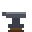
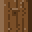
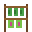
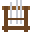
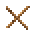
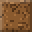
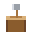
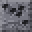

Homes
Every villager needs a home with a bed, a chest and the item of their trade. The village's own houses, the castle, keeps, the lodge, the farmhouse and the mine come furnished. If one of the three goes missing, that villager stops trading or working until it is put back.
Build your own
Any closed room near your village can be a home: walls on both sides, a floor, a roof, a back wall behind every block and a door. Put in a bed, a chest and a job item. A new villager of that trade moves in by themselves, and the Homes list in the Buildings window lets you move a villager between homes.
Job items
| Villager | Job item | Made from (workbench) |
|---|---|---|
| Blacksmith |  Anvil | Iron bar ×5 |
| Cook |  Cooking pot Cooking pot | Iron bar ×2,  Oak log |
| Herbalist |  Herb rack |  Oak planks ×4, Herb ×3 Oak planks ×4, Herb ×3 |
| Fisher | Barrel | Oak planks ×8, Iron bar |
| Jeweler | Gem bench | Oak planks ×4, Glass ×2 |
| Shipwright | Ship's wheel | Oak planks ×6, Iron bar |
| War engineer | Drafting table | Oak planks ×5, Iron bar |
| Demolitionist | Powder keg | Barrel, Black powder ×2 |
| Quartermaster |  Weapon rack | Found or bought |
| Recruiter | Notice board | Oak planks ×4,  Sticks ×2 |
| Beast trainer | Feed trough | Oak planks ×4, Wheat ×4 |
| Head farmer |  Composter Composter | Oak planks ×4,  Dirt ×4 |
| Farmer | Composter | Oak planks ×4, Dirt ×4 |
| Head forester |  Chopping block | Oak log ×2, Sticks |
| Woodcutter | Chopping block | Oak log ×2, Sticks |
| Mine foreman | Ore cart | Iron bar ×4,  Coal ×2 |
| Miner | Ore cart | Iron bar ×4, Coal ×2 |
Guard posts
A Guard post (2 planks, an iron bar and 2 sticks) can be placed in any home that has a bed, a chest and a job item. Each one shows up in the Buildings window as a post where you can station a soldier.
Stages and furniture
As your village grows, buildings change from wood to stone to iron, and the castle from stone to deep stone to iron. Furniture inside changes with them: stone, deep stone and iron tables, chairs, benches, stools, beds, cupboards, desks, barrels and bookshelves, which you can also craft. Roofs are hay at the wooden stage, then tiles and painted iron in your faction's colour. Enemy villages follow the same rules as they grow.